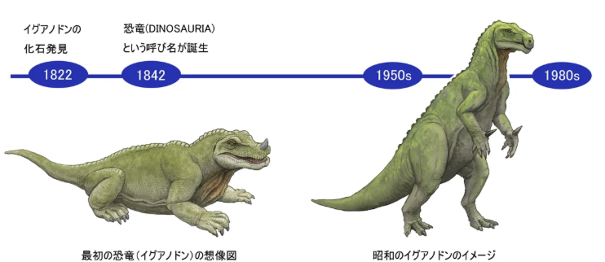
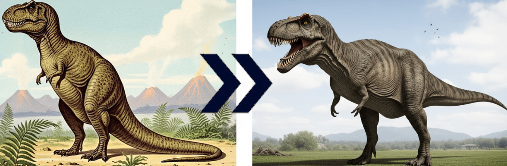
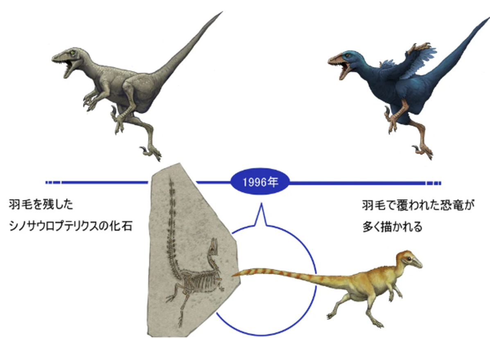
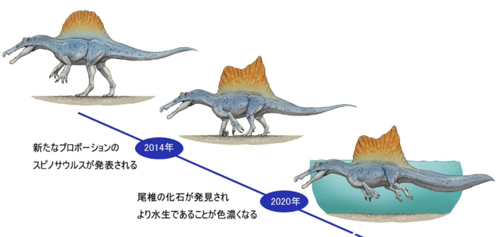

1. 研究アプローチ：化石の「外側」から「内側・ミクロの世界」へ
かつては化石の形をじっくり観察し、スケッチを描き、他の化石と見比べる「形態学的な記載（分類）」が中心でした。
現在は、医療用や工業用のCTスキャンが導入され、化石を傷つけることなく、岩石の内部にある微細な骨や、恐竜の脳組織の形（脳腔）まで3Dデータで精密に復元できるようになりました。さらに、シンクロトロン放射光などの強力なX線分析により、化石の細胞レベルの構造や、付着した元素の特定まで可能になっています。
2. 恐竜のイメージ：「鈍重なトカゲ」から「活動的な鳥の祖先」へ
かつての恐竜像はトカゲやワニのイメージの延長線上にあり、尾を引きずり、冷血動物で動きが鈍く、体色は地味な緑や茶色だと推測されていました。しかし現在の恐竜像は、「鳥類の祖先」としての側面が完全に定着しています。
- 羽毛の発見：中国などで保存状態の良い羽毛恐竜の化石が相次いで見つかりました。
- 体色の解明：化石に残された微細な色素細胞（メラノソーム）の形状を現生鳥類と比較することで、具体的な体色（赤茶色や、カササギのような光沢のある黒など）まで科学的に突き止められました。
- 生態の復元：骨の組織分析（成長線）から、恐竜が温血動物に近い高い代謝熱を持ち、急速に成長していたことや、尾をピンと上げて活発に走り回っていたことが分かっています。
3. テクノロジーの融合：デジタルと分子科学の導入
古生物学は地質学のジャンルでしたが、現在は生物学、化学、情報科学との融合が進んでいます。
- 分子古生物学（古DNA・有機化石）：数万年前の化石（マンモスやネアンデルタール人など）からはDNAが抽出され、ゲノム解析が行われます。数千万年前の恐竜の化石からも、コラーゲンなどのタンパク質断片（アミノ酸）の痕跡を見つける研究が進んでいます。
- バイオメカニクス（生物力学）：3Dモデル化した骨格データに、コンピューター上で筋肉のシミュレーション（有限要素法など）を施すことで、顎の噛む力や走行速度を物理的に計算できるようになりました。
- 統計学とAI：地球全体の化石データベース（Paleobiology Databaseなど）を活用し、AIや大規模な統計解析を用いることで、過去数億年の生物多様性の変動や、大量絶滅のメカニズムを地球規模のビッグデータとして解析しています。
4. 古生物学における復元図（予想される姿）の変遷
化石の発見と分析技術（CTや化学解析）が進化するたびに、恐竜たちの姿は「より生物らしく、より鳥類に近い姿」へと塗り替えられてきました。有名な恐竜を例に、その変遷を時系列で追っていきます。
1）19世紀中期：巨大な「トカゲやサイ」の時代
恐竜（Dinosauria）という言葉が作られたばかりの黎明期。当時はまだ断片的な骨しか見つかっておらず、比較対象が現生の爬虫類や哺乳類しかなかった。
特徴：4本足で地面を這うように歩く、鈍重なトカゲやワニのような姿。またはサイのような皮膚の質感。
具体例（イグアノドン）：最初に発見された恐竜の一つ。「親指の骨」を鼻の上の角だと誤認され、巨大なイグアノナのような姿で復元された。ロンドンの水晶宮（クリスタル・パレス）に作られた当時の模型が有名です。

2）20世紀前半〜中期：ゴジラ型の「直立・冷血動物」の時代
骨格全体の化石が見つかり始め、恐竜が2本足で立てることが分かってきた。まだ「冷血な爬虫類」のイメージが強く、活発には動けないと考えられていた。
特徴：尻尾を地面に引きずり、上体を完全に起こした「カンガルー型（ゴジラ型）」の姿勢。動きが遅く、沼地に浸かって身を守っていたと想像されていた。
具体例（ティラノサウルス）：20世紀の図鑑や映画（初期のキングコングなど）では、上体を直立させ、尻尾を引きずって歩く怪獣のような姿で描かれていた。

3）20世紀後半（1970年代〜）：恐竜ルネサンス「活動的な温血動物」への変革
1960年代末に小型恐竜「デイノニクス」が発見されたことをきっかけに、「恐竜ルネサンス」と呼ばれる学説の大転換が起きた。恐竜は鳥類の祖先であり、温血動物で、非常に俊敏だったという説が主流になる。
特徴：尻尾を地面から高く上げ、頭から尾までが地面と水平になる「前傾姿勢」。これにより、時速数十キロで走る活発なイメージへと一新された。
4）21世紀〜現在：「羽毛と色彩」の時代
中国の遼寧省などで、保存状態が極めて良い「羽毛恐竜」の化石が相次いで発見され、復元図はさらに激変した。
特徴：多くの小型獣脚類（ティラノサウルスの祖先含む）に、毛や羽毛が生えていたことが判明。さらに「メラノソーム（色素細胞）」の解析により、想像ではなく「科学的に裏付けられた体色」で描かれるようになった。
具体例（現在のティラノサウルスやミクロラプトル）：ティラノサウルスも、幼体や一部の近縁種にはフサフサした羽毛があったとされ、一部の復元では「巨大な鳥」や「ダチョウ」を彷彿とさせる姿で描かれる。また、ミクロラプトルなどは「カラスのような光沢のある黒い羽」を持っていたことが分かっている。


5. 補足：あわせて知っておきたいトピック
6. 恐竜をはじめとする古生物学の研究におけるAI（人工知能）の導入効果
古生物学は「職人の経験と直感」に支えられてきた学問ですが、近年はAI（AI for Science）の導入により、発掘から復元、シミュレーションに至るまでの研究プロセス全体が加速しつつあります。
1）化石クリーニングと発掘の自動化
発掘された岩石から化石を傷つけずに取り出す「クリーニング」は、極めて高度な技術と膨大な時間を要する作業です。
- AIプリパレーター（自動掘削システム）：岩石のCTスキャン画像から、どこに骨があり、どこからが岩石かをAIが正確に識別する。このデータを基にロボットアームを制御し、自動でクリーニングを行う技術開発が進められている。
- 微小化石の自動検出：恐竜が生きていた時代の環境を知る手がかりとなる「微化石（放散虫や花粉など）」を、顕微鏡画像からAIが自動で見つけ出し、種類を鑑定・分類。人間が数日かけていた作業をわずか数時間に短縮できる。
2）3Dモデルによる「骨格復元」と欠損補完
発見される恐竜の化石が、完全に揃っているケースは極めて稀で、大半は一部が欠けていたり、地圧で歪んだりしています。
- デジタル変形修正：地層の中で押しつぶされて歪んでしまった骨のCTデータを、AIが本来の解剖学的な形状を推測して元の形にデジタル復元する。
- 欠損部の予測：近縁種のデータを学習したAIが、失われた部位（例えば右足の化石から左足の形状を推測するなど）を高い精度で補完し、より正確な全身骨格の復元を可能にする。
3）バイオメカニクス（生物体力学）による生態・運動の再現
「この恐竜はどれくらいの速度で走れたのか？」「どれほどの噛む力があったのか？」という謎に対して、AIはシミュレーターとして機能します。
- 筋肉・動作のシミュレーション：骨の形状やアタッチメント（筋肉の付着痕）のデータをAIに読み込ませ、深層学習や強化学習を用いて「最も効率的な歩行・走行パターン」を導き出す。これにより、従来の推測よりも格段にリアルな恐竜の運動能力が算出できる。
4）進化の系統樹や「形作り」の数理モデリング
恐竜がどのように進化し、鳥類へとつながっていったのかを解き明かす分類学でもAIが活用できます。
- 系統解析の高速化：膨大な骨の特徴データをAIに学習させ、人間では気づきにくい微細な形状パターンの類似性を発見し、より正確な系統樹（進化の歴史）を構築する。
- 形態形成の解明：生物の「形」が作られるメカニズムを画像から逆算し、数理モデルを提案するAI技術もあり、恐竜のトサカや装甲、羽毛がどのように進化・形成されたかの理論的アプローチを支える。
5）地層データからの「未発見フィールド」の予測
- 発掘ポイントの選定：衛星画像、地質図、過去の発掘データなどをAIに統合・分析させることで、「まだ化石が見つかっていないが、恐竜化石が埋蔵されている可能性が極めて高い地層（ピンポイントなエリア）」を予測し、発掘調査の成功率を高める。